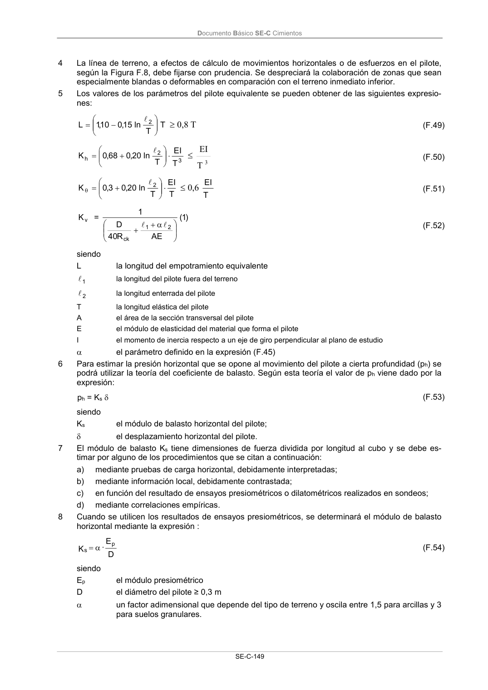
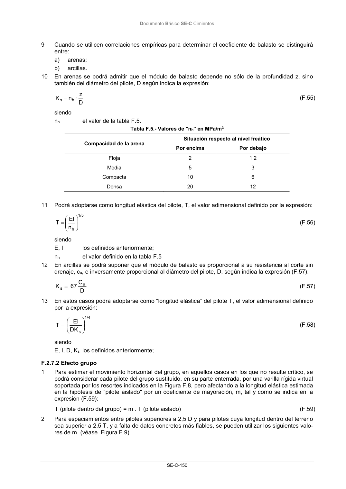
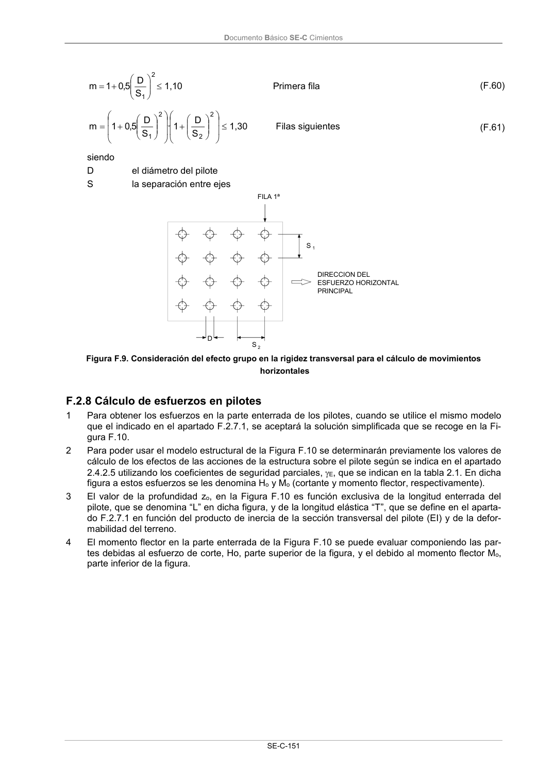

DB-SE-C Cimientos · edición 2019-12-20 · capa oficial
Documento DB-SE-C-oficial · SHA-256 del PDF a71133f4b0dca253e45ea3071c70f2a512354bcc5cd841bf89b1a502f567ac5e
Copia fiel del PDF fuente · Fuente oficial
Ficha de la disposición en la fuente oficial
Formatos: JSON del segmento · Markdown
F.2.7 Estimación de movimientos horizontales en pilotes F.2.7.1 Pilote aislado 1 Para el cálculo de los movimientos horizontales del pilote se podrá utilizar la teoría de la “viga elás- tica” o del “coeficiente de balasto”. 2 Aunque las soluciones "exactas" de este problema están bien resueltas mediante ábacos y curvas, en el presente DB se admitirá como suficientemente preciso utilizar la solución aproximada que se esquematiza en la Figura F.8. 3 En la solución aproximada de la Figura F.8 la parte del pilote que queda dentro del terreno queda sustituida, a efectos del cálculo de esfuerzos y movimientos al nivel del terreno, por una varilla rígi- da de longitud L, sujeta a su base mediante un resorte vertical, otro horizontal y otro de giro, tal co- mo se indica en la figura. Figura F.8. Barra equivalente para el cálculo de movimientos Documento Básico SE-C Cimientos SE-C-149 4 La línea de terreno, a efectos de cálculo de movimientos horizontales o de esfuerzos en el pilote, según la Figura F.8, debe fijarse con prudencia. Se despreciará la colaboración de zonas que sean especialmente blandas o deformables en comparación con el terreno inmediato inferior. 5 Los valores de los parámetros del pilote equivalente se pueden obtener de las siguientes expresio- nes: T T ln 15 ,0 10 ,1 L 2 l 0,8 T (F.49) 3 2 h T EI T ln 20 ,0 68 ,0 K l 3 T EI (F.50) T EI T ln 20 ,0 3,0 K 2 l 0,6 T EI (F.51) v K = )1 ( AE R 40 D 1 2 1 ck l l (F.52) siendo L la longitud del empotramiento equivalente 1 l la longitud del pilote fuera del terreno 2 l la longitud enterrada del pilote T la longitud elástica del pilote A el área de la sección transversal del pilote E el módulo de elasticidad del material que forma el pilote I el momento de inercia respecto a un eje de giro perpendicular al plano de estudio el parámetro definido en la expresión (F.45) 6 Para estimar la presión horizontal que se opone al movimiento del pilote a cierta profundidad (ph) se podrá utilizar la teoría del coeficiente de balasto. Según esta teoría el valor de ph viene dado por la expresión: ph = Ks (F.53) siendo Ks el módulo de balasto horizontal del pilote; el desplazamiento horizontal del pilote. 7 El módulo de balasto Ks tiene dimensiones de fuerza dividida por longitud al cubo y se debe es- timar por alguno de los procedimientos que se citan a continuación: a) mediante pruebas de carga horizontal, debidamente interpretadas; b) mediante información local, debidamente contrastada; c) en función del resultado de ensayos presiométricos o dilatométricos realizados en sondeos; d) mediante correlaciones empíricas. 8 Cuando se utilicen los resultados de ensayos presiométricos, se determinará el módulo de balasto horizontal mediante la expresión : D E · K p s (F.54) siendo Ep el módulo presiométrico D el diámetro del pilote ≥ 0,3 m un factor adimensional que depende del tipo de terreno y oscila entre 1,5 para arcillas y 3 para suelos granulares. Documento Básico SE-C Cimientos SE-C-150 9 Cuando se utilicen correlaciones empíricas para determinar el coeficiente de balasto se distinguirá entre: a) arenas; b) arcillas. 10 En arenas se podrá admitir que el módulo de balasto depende no sólo de la profundidad z, sino también del diámetro del pilote, D según indica la expresión: D z · n K h s (F.55) siendo nh el valor de la tabla F.5. Tabla F.5.- Valores de "nh" en MPa/m3 Compacidad de la arena Situación respecto al nivel freático Por encima Por debajo Floja 2 1,2 Media 5 3 Compacta 10 6 Densa 20 12 11 Podrá adoptarse como longitud elástica del pilote, T, el valor adimensional definido por la expresión: h 1/5 n EI T (F.56) siendo E, I los definidos anteriormente; nh el valor definido en la tabla F.5 12 En arcillas se podrá suponer que el módulo de balasto es proporcional a su resistencia al corte sin drenaje, cu, e inversamente proporcional al diámetro del pilote, D, según indica la expresión (F.57): D C 67 K u s (F.57) 13 En estos casos podrá adoptarse como “longitud elástica” del pilote T, el valor adimensional definido por la expresión: s 1/4 DK EI T (F.58) siendo E, I, D, Ks los definidos anteriormente; F.2.7.2 Efecto grupo 1 Para estimar el movimiento horizontal del grupo, en aquellos casos en los que no resulte crítico, se podrá considerar cada pilote del grupo sustituido, en su parte enterrada, por una varilla rígida virtual soportada por los resortes indicados en la Figura F.8, pero afectando a la longitud elástica estimada en la hipótesis de "pilote aislado" por un coeficiente de mayoración, m, tal y como se indica en la expresión (F.59): T (pilote dentro del grupo) = m . T (pilote aislado) (F.59) 2 Para espaciamientos entre pilotes superiores a 2,5 D y para pilotes cuya longitud dentro del terreno sea superior a 2,5 T, y a falta de datos concretos más fiables, se pueden utilizar los siguientes valo- res de m. (véase Figura F.9) Documento Básico SE-C Cimientos SE-C-151 2 1 S D 5,0 1 m 1,10 Primera fila (F.60) 2 2 2 1 S D 1 · S D 5,0 1 m 1,30 Filas siguientes (F.61) siendo D el diámetro del pilote S la separación entre ejes 1 DIRECCION DEL ESFUERZO HORIZONTAL PRINCIPAL S 2 S D FILA 1ª Figura F.9. Consideración del efecto grupo en la rigidez transversal para el cálculo de movimientos horizontales


